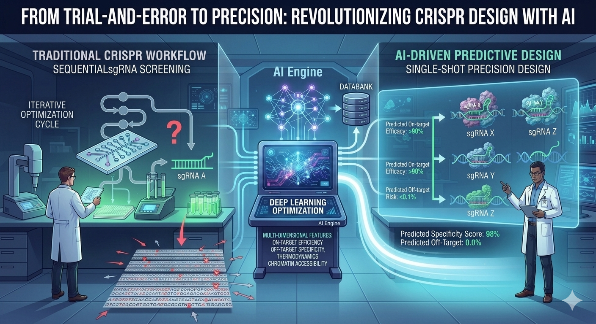
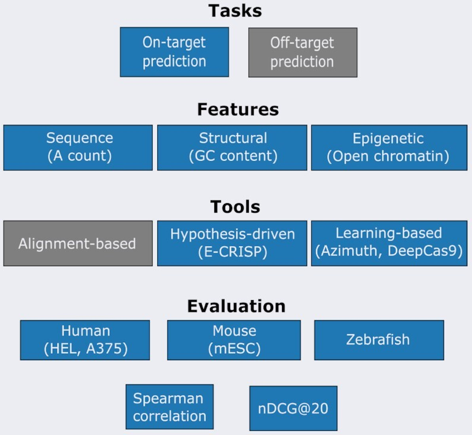
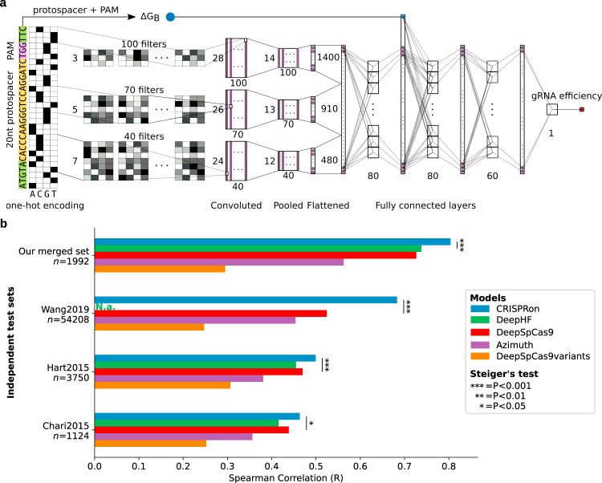
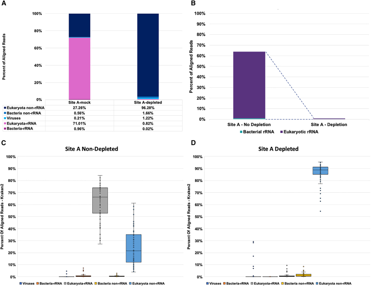
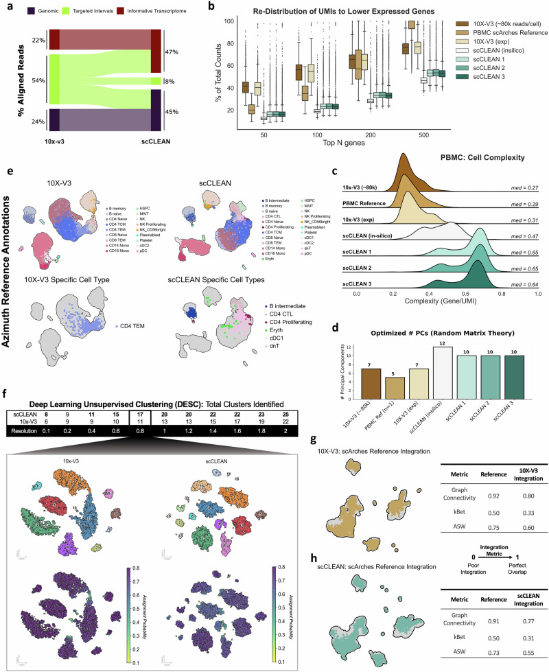

Editing a genome usually means designing a handful of guides against one gene. Building a molecular depletion assay meant designing, scoring, and functionally validating tens of thousands of guides at once, against thousands of distinct targets, in pools where every guide's behavior could shift depending on what else was in the tube with it. We ran that as a tight loop — design computationally, test in the wet lab, feed the results back in — for two to three cycles per assay, and the only way to make that loop converge quickly was to get serious about which sequence and structural features actually predicted whether a guide would cut well.
What the Literature Actually Says
The last few years have produced a genuinely good body of work on this exact question, and it converges on the same shortlist of features every time: GC content and its position along the protospacer, PAM context, predicted secondary structure and binding free energy, and a handful of positional nucleotide preferences that don't have an obvious mechanistic story but show up in dataset after dataset anyway. Konstantakos et al.'s 2022 review in Nucleic Acids Research is the clearest map of this space I've read: it lays out the feature classes, the tool landscape from hypothesis-driven scoring rules through gradient-boosted trees to deep learning, and benchmarks all of it across six datasets spanning human, mouse, and zebrafish.

The strongest single result in this window is Xiang et al.'s 2021 CRISPRon model, published in Nature Communications. They generated a large new on-target activity dataset in HEK293T cells, merged it with existing public data, and trained a model that beat every prior tool — DeepHF, DeepSpCas9, Azimuth — across four independent test sets it had never seen. What makes it a good template isn't just the accuracy gain; it's that the model doesn't pick a side between "sequence-only" and "biophysical" features. It feeds one-hot encoded sequence through convolutional layers and concatenates that with a computed binding free energy term before the fully connected layers make the final call — a pattern worth stealing regardless of which base algorithm you reach for.
Depletion Assays Break Half the Assumptions
Almost all of that literature, including both papers above, is solving in vivo genome editing: pick the best three or four guides against one gene, where "best" means high on-target cutting and vanishingly low off-target risk elsewhere in a diploid genome. CRISPRclean-style depletion is a different design problem wearing the same enzyme. You're not editing anything — you're using Cas9 cleavage in vitro, before library amplification, to remove a defined population of unwanted cDNA molecules (ribosomal RNA, globin transcripts, whatever's swamping your signal) so they never make it into the sequencing data. That changes the optimization target in three ways. First, you need guides against thousands of sites, not three or four, so per-guide accuracy has to hold up at a scale where hand-curation is impossible. Second, off-target effects that would be a dealbreaker in vivo are irrelevant here — there's no genome to protect, only a library to clean — while a false negative, a target that survives cleavage, is the costly failure mode. Third, because every guide in a depletion pool competes for the same Cas9 and reaction volume, you can't score guides independently the way most published models do; you have to weigh PAM site density and steric crowding across the whole pool, and use efficacy predictions to set relative molar ratios rather than a simple pass/fail cutoff.
Gradient Boosting: Fast, Interpretable, Data-Efficient
For a problem shaped like that, gradient boosting regressors are usually the right first tool, and the data backs that up better than the "deep learning wins by default" narrative suggests. XGBoost and LightGBM both handle the tabular, engineered-feature format this problem naturally takes — GC content, PAM density, thermodynamic scores, transcript abundance from empirical NGS data — without needing millions of examples to find signal. BoostMEC, a LightGBM-based model published in BMC Bioinformatics in 2022, benchmarked favorably against ten established tools, including several deep learning models, across thirteen external datasets, and its authors point out a real practical advantage: boosted trees hand you interpretable feature importances, so when a batch of guides underperforms you can trace the failure to a specific feature instead of treating the model as a black box. In a design-build-test loop under time pressure, that diagnosability is worth almost as much as raw accuracy.
Deep CNNs: Letting the Model Find the Motif
Convolutional neural networks earn their keep when the signal is more subtle than any hand-engineered feature captures — sequence motifs and positional interactions across the protospacer and PAM that nobody has written down as a formula, because nobody fully knows what they are yet. CRISPRon's architecture illustrates how to do this without discarding domain knowledge: one-hot encode the 30-mer, run it through parallel convolutional filters at multiple kernel widths to catch motifs of different lengths, pool and flatten, then merge that representation with the binding free energy term before fully connected layers predict efficiency.

The tradeoff is exactly what you'd expect: CNNs need real volume to train well, tens of thousands of labeled guides at minimum, and what they learn doesn't hand you an obvious explanation the way a feature-importance plot does. For depletion assay design specifically, that volume comes from pooled cleavage kinetics — a CNN trained on prior rounds of pooled data can pick up interaction effects between neighboring guides that a per-guide gradient boosting model, by construction, can't see at all.
Where the Loop Paid Off
Two products built on exactly this design loop, both of which ended up published rather than staying internal.
The first targeted agnostic pathogen detection: pull a nasopharyngeal swab, sequence everything in it, and let the data tell you what's there instead of testing for one pathogen at a time. The problem is that a raw metatranscriptomic library is almost entirely human and bacterial ribosomal RNA — the pathogen you're actually looking for, especially at low viral load, is a needle buried under that background. The guide set for this assay ran to roughly 13,000 sgRNAs — 435 against human rRNA and 12,978 against rRNA from 212 bacterial species — filtered for GC content, homopolymers, and off-target homology, spaced at roughly one guide per 40 bp, and ranked by Azimuth's gradient-boosted efficiency score, the same class of model described above. In clinical nasopharyngeal samples, that guide set depleted 98% of bacterial rRNA and 99% of human rRNA, which translated into up to a 6-fold increase in SARS-CoV-2 read counts and sensitivity matching RT-qPCR out to Ct 35 — while still leaving the metagenomic data intact enough to type strains and catch co-infections in the same run. It shipped as a peer-reviewed method, not just a product datasheet.

The second applied the same loop to single-cell RNA-seq, where the problem isn't background contamination but a different kind of imbalance: a handful of housekeeping and mitochondrial transcripts soak up most of a cell's sequencing budget, crowding out the lower-abundance transcripts that actually distinguish one cell type from another. Here the guide set was smaller and more targeted, around 4,630 sgRNAs against ribosomal RNA, ribosomal and mitochondrial protein-coding genes, select genomic intervals, and non-variable genes — selected the same way, using CRISPick's efficiency prediction on top of the same GC, homopolymer, and off-target filters. Depleting under 1% of the transcriptome removed about 58% of aligned reads that weren't telling you anything new, and redirected that sequencing capacity toward the transcripts that were. In PBMC samples, the fraction of informative UMIs roughly doubled — from 39% to 92% — and the resulting data resolved five additional immune cell types, including rare populations like cDC1s, that the standard workflow missed entirely.

Neither result came from a fundamentally novel algorithm — both leaned on published, well-validated efficiency scores. What made the difference was treating guide design as a scoring-and-filtering pipeline applied at the scale the assay demanded, then closing the loop with real wet-lab data instead of trusting the prediction and moving on.
So Which One Actually Wins?
The honest answer, and the one the field's own literature keeps landing on, is that it depends on how much data you have and what you need out of the model. Sherkatghanad et al.'s 2023 review in Briefings in Bioinformatics found deep learning pulling ahead once datasets reach the hundreds of thousands of examples, but also documented cases — BoostMEC among them — where a well-featured boosted tree model matched or beat far more complex networks while staying interpretable. The best-performing published model in this space, CRISPRon, doesn't choose sides either: it's a CNN wearing a gradient boosting model's favorite feature, binding free energy, as an extra input. That's the approach I'd bet on for any assay where you can afford both a solid feature set and enough data to let a network find what the features missed — start with gradient boosting for something fast and diagnosable, then layer in a CNN once you have the pooled data volume to earn its keep.